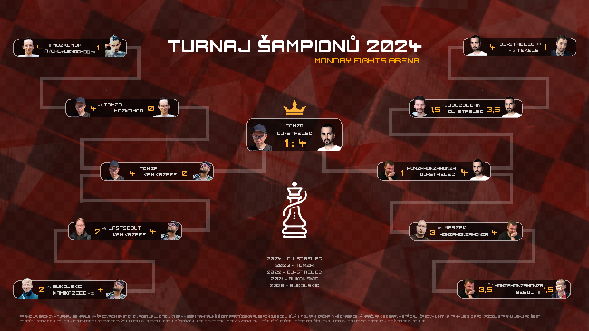

Turnaj šampionů 2024
Pátého PlayOFF Monday Fights se účastnilo 12 hráčů s nejvyšším počtem bodů v sezóně 2024. Nováček Kamikazeee se do turnaje probojoval až na poslední chvíli. Žádný z kvalifikovaných hráčů neodstoupil, takže se tentokrát nedostalo na náhradníky pod čarou.
První čtyři nasazení šli přímo do čtvrtfinále, ostatních osm bojovalo v osmifinále. Série se hrály vyřazovacím způsobem: postup získal první hráč se třemi a půl body. Hráči si termíny domlouvali sami, partie šlo sledovat živě a fandit v chatu. Novinkou byla tipovačka, kterou vyhrál DJ-Střelec; z 19 účastníků se stala úspěšná součást pavouku.

Ohlédnutí Jouzoleána


DJ-Střelec – Tekele
V prvním osmifinále na sebe tíhu zodpovědnosti vzal DJ-Střelec spolu s Tekelem. Pro Střelce, který má elo snad 2300 a hraje téměř pořád, navíc velmi silně a vyrovnaně, to měla být procházka růžovou zahradou. Tekele, který se věnuje spíše ženským nežli šachu, se již dopředu těšil na jeho brzký konec v pavouku.
Při samotném souboji však Tekele navzdory svému nepříznivému osudu těžce bojoval. Poté, co prohrál svého Caro-Kanna za černé a Vídeňskou za bílé, vytáhl své eso z rukávu v podobě Sicilské. Tu Střelec v nitru své šachové duše nenávidí – dostavila se nervozita, Tekele to vycítil, přemístil dámu k útoku a tlačil, tlačil, až vytlačil výhru-cenný bodík. V dalším průběhu však Tekelemu již nezbyly síly a po další prohrané Vídni a Caro-Kannu prohrál 4:1, za což se však rozhodně stydět nemusí.


HonzaHonzaHonza – Bebul
Druhé osmifinále na sebe nenechalo dlouho čekat a ke svým e-boardům zasedli také HonzaHonzaHonza a Bebul. Honza měl té doby v hlavě jen matematiku a MF flákal, Bebul zase seděl v přetopené chatě téměř bez signálu s vypadávajícím internetem, mohlo to tedy dopadnout jakkoliv.
Bebul zahájil hru lstivým Albinovým gambitem, s kterým si Honza dlouhodobě láme hlavu. I když se v zahájení ubránil, v pozdější fázi zcela ztratil koncentraci a hrozivým způsobem by prohrál, kdyby nenašel poslední záchrannou vidličku, která mu zajistila alespoň remízu. Poté ještě Bebul vyhrál proti Francii systémem s f4 a dostal se na krátko do vedení, ale Honza se neuvěřitelně vzchopil, vyhrál tři partie po sobě a byl konec. 3,5:1,5 pro Honzu.


Mozkomor – Rychlý Lenochod
Ve třetím osmifinále změřili síly Mozkomor a Rychlý Lenochod. Pro Mozkomora to měla být pouze formální záležitost, i když střípky pochybností Lenochod vzbuzuje vždycky. Pořád mám v paměti rok 2021, kdy v pavouku překvapil Bukowskice a nepříjemně mu ukousl dva body. A letos opět zlobil!
Hned v první hře, navíc v královském gambitu, se dostal do takové výhody, že mu stroj ukazoval za šest tahů mat. Lenochod ale zpanikařil, výhodu si nepohlídal a hru prohrál, což udalo směr celé bitvy. Při stavu 3:0 ještě alespoň nachytal Mozkomora v jeho ruské hře a snížil na 3:1, v další hře ale už Mozkomor pevně rozhodl a slavil postup do čtvrtfinále.


Bukowskic – Kamikazeee
O poslední postupové místo do čtvrtfinále se měli porvat mocný veterán Bukowskic a nováček Kamikazeee. Buki už dvakrát PlayOFF vyhrál, naposledy však v roce 2021, a tak byl po vítězství velmi hladový. Kamikazeee, který platil za velkého outsidera, se pustil do důkladné přípravy, aby soupeře zaskočil, přičemž našel i nějaké slabiny.
Ty se projevily hned v první partii, kdy převaha ve středu po Lotyšském gambitu vyústila ve ztrátu věže ve snaze zabránit proměně pěšce na dámu. V druhé se černému sesypal Philidorův systém a ve třetí favorit při třech sekundách přehlédl, že nelze brát dámu pro mat střelcem a koněm. Bukowskic korigoval na 2:3, ale k obratu se nedostal. Kamikazeee si překvapivý postup pohlídal ve 23 tahů dlouhé miniaturce.

Jouzolean – DJ-Střelec
Čtvrtfinále mezi Jouzoleanem a DJ-Střelcem slibovalo napínavou podívanou. Jouzolean se dokáže na partie připravit tak, že i silné hráče trápí, kor když se jedná o Střelce, kterého tak dobře zná. Tento rok si připravil Ponzianiho gambit – dle opening tree největší slabinu Střelce.
I přesto, že toto zahájení hrál strašlivě špatně, Jouza mu tam ukradl pouze jeden a půl bodu. Ukázalo se, že DJ je chytřejší, protože za bílé hrál 1.f4. Zmařil tak Jouzoleanovi černou přípravu i jeho morálku a vyřadil ho 3,5:0,5, načež mu zbyly jen oči pro pláč.

Mrázek – HonzaHonzaHonza
Už podle kartičky jsme se mohli těšit na velmi vyrovnaný souboj a tak se nakonec i stalo. Po čtyřech odehraných partiích byl stav 3:1 pro Honzu – dvakrát vyhrál Honza, dvakrát nastala remíza. Pro Mrázka to vypadalo katastrofálně, ale něco v jeho nitru ho hnalo dál, začal hrát ostřeji a cílevědoměji.
Honza to cítil, až znervózněl a začal dělat chybičky. Mrázek se štěstím dotáhl skóre na 3:3 a krvelačné drama se přelilo do prodlužovacího bulletu. Tam se jako rychlejší a přesnější hráč ukázal HonzaHonzaHonza a slavil zasloužený postup.

Tomzr – Mozkomor
Tomzr, který byl po výhře v sezóně nasazen do pavouka jako první a navíc se radoval z vítězství v PlayOFF minulý rok, byl v souboji proti Mozkomorovi jasným favoritem. Hrál uvolněně, bezpečně, sem tam zahrál nějaký brutální taktický tah, na který jsme všichni koukali jako puci.
Mozkomor to zkoušel jak nejlíp uměl. Bránil se srdceryvně jako středověký rytíř, hledal skulinky, slabinky, něco, co by mohlo zlomit vaz svému rivalovi, ale bez úspěchu. Tomzr vyhrál 4:0 a radoval se z postupu do semifinále bez větších problémů.

LastScout – Kamikazeee
Poslední čtvrtfinále nabídlo vyrovnaný souboj mezi překvapením základní části LastScoutem, který se v posledním týdnu dostal na úkor Bukowskice rovnou do poslední osmičky, a Kamikazeeem, který překvapil v osmifinále a díky ratingu byl lehkým favoritem.
Kamikazeee šel do vedení, když potrestal černého naivní hru v obraně. I v druhé partii dominoval bílý, LastScout srovnal na 1:1 krásným matem střelcem. Ve čtvrté partii Kamikazeee černými brzy lstí chytil dámu a přidal třetí bod. LastScout pak díky vidličkám na koně a věž snížil na 2:3, ve vyhrané pozici se však nechal zlákat šachováním a dostal mat. Kamikazeee si tak mohl zhluboka oddechnout po výhře 4:2.
DJ-Střelec – HonzaHonzaHonza
V prvním semifinále na sebe zbyli DJ-Střelec a HonzaHonzaHonza. Už kartička favorizovala Střelce v poměru 9:1. Na takto těžký oříšek narazil náš Hans, který jinak turnajem proplouval tak slavně a úspěšně. Byl to souboj přípravy.
Honza padl do přípravy DJ-Střelce i s navijákem v Eglundově gambitu, ale kupodivu našel zajímavé řešení, jak z toho vybruslit. Střelec zase úspěšně velmi brzy odbočil ze svých tradičních linií a Honzovi nedovolil, stejně jako v souboji s Jouzoleanem, jeho pasti vůbec uskutečnit. Výsledek bitvy byl zasloužený pro obě strany – 4:1 pro DJ-Střelce, našeho prvního finalisty.
Tomzr – Kamikazeee
Ve druhém semifinále šli do boje Tomzr a Kamikazeee. Dle kartičky měl Kamikazeee jen 20 % šanci na úspěch, přesto se podle jeho slov cítil na výhru. Mluvil o třech hodinách přípravy, která byla esem v jeho rukávu.
Nicméně Tomzr hrál zase úplně něco jiného, takže Kamikazeeemu zbyly také oči pro pláč. To už je druhej úvaz. Zajímavostí bylo, že Tomzr poprvé souboj streamoval, takže bylo možné sledovat jeho trýčky online, což MFťáky rozdělilo na dva fandící tábory – Spectátory a Twitcháky. Z výsledku 4:0 se radoval především Tomzr, náš druhý finalista.
Finále: Tomzr – DJ-Střelec
Finále tedy dopadlo přísně. Tomzr vs DJ-Střelec. Minulý rok na sebe narazili už v semifinále a byla to strašná řežba. Tehdá postoupil Tomzr výsledkem 3,5:2,5. DJ přísahal, že se pomstí, dokonce zvýšil svou aktivitu a na turnaje chodil více, aby získal lepší pozici v pavouku. A už letos se dočkal první příležitosti, a to hned ve finále.
Po prvních dvou hrách byl stav 1:1. Všichni očekávali dlouhé drama, spektátoři zarytě mlčeli a nechápali tahy dvou géniů. Střelec postupně začal utahovat smyčku – dvě další hry vyhrál a Tomzrovi tak visel šachový život na vlásku. Tak strašný tlak na bedrech Tomzrových spočinul, že to dále nevydržel a razil malinkou chybičku za chybičkou, až se jeho poslední partie úplně rozpadla. DJ-Střelec tak pomstil svou loňskou porážku a radoval se již podruhé z vítězství v turnaji šampionů.